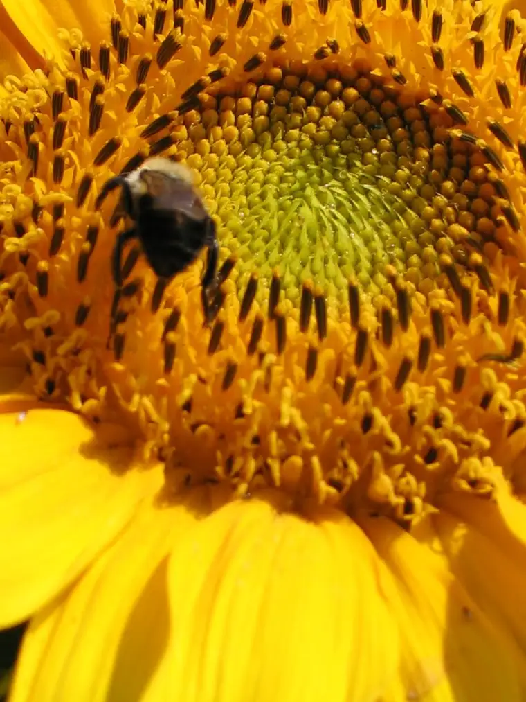

 |
| Busy bee at St. Benedict’s Monastery, Aug09 |
{kind=link}
After seeing so much snow over the past couple weeks, I really needed a sunny photo to head up my blog today! Ahhh…refreshment! Even if I can’t experience warmer days right now, thinking about them gives me just enough lift to make it through another 24 hours.
I have to admit, though, it was a hard-won effort to find this shot of a bee siphoning pollen from a sunflower. I snapped it two summers ago during one of my writing retreats at St. Benedict’s Monastery, and like so many photos I once had tucked away and filed neatly in my computer data base, this one was misplaced. Hundreds more have disappeared altogether.
Losing hundreds of photos due to a blog-platform change at my mirror blog, “Area Voices,” and several computer crashes will go down as one of my biggest regrets/losses of 2010. Whenever I think on all that has been lost through these missing images, I feel sick. I’d hoped to someday make my blogs into books that I could give to the kids so that they would have a record of my words AND the images with which I’d paired them. It could take years to restore the photos that are retrievable; some are gone forever.
Dwelling on the loss won’t do much to improve my life, however, so instead I want to do what others have done and take stock of successes from 2010.
At this time last year, I’d just made the decision to give full-time freelancing an earnest try. Most of my thoughts were contained in the quiet recesses of my mind, so sharing them took courage. I was delighted by how well-received my plan was as I slowly revealed it to those I could trust.
One of the first people to encourage me at the utterance of the plan was my new friend and fellow freelance writer/editor Christina Capecchi. It’s hard to believe it’s been only a year since we connected. It feels like much longer; such has been the depth of her presence in my life. Her response to my plan felt like a God-whisper: You can do this! It was exactly what I needed to propel my idea forward.
Tapping into that well of encouragement, and with the help of a consultant friend, I formalized Beauclair Communications, bringing together years of communications pursuits into one package. Step by step, I took action to begin building my business so that by the time fall arrived — my projected starting time — I would not be sitting around twiddling my thumbs. I reached out, talked to other freelancers, read about the freelance life, and placed myself “out there.” I let enough people know what I was up to to receive the support I would need to continue on.
With the start of school, my business was officially launched. That first day, after the annual Moms’ coffee, I had a meeting with a client — someone with whom I’d begun establishing a relationship years before. Much to my delight, our discussion ended in the securing of ongoing work for them — a thrilling start! And instead of sitting in my office with nothing to do these past months, I’ve been pleasantly busy so far. I expect a lull eventually, but so far it has yet to happen.
So what have I really been up to? Have I anything to show for this professed busyness? Here are some of the projects on which I’ve worked in the last couple months alone:
- A personal profile piece on finances featuring a man who won $500,000 in a lottery several years ago
- A feature story about a 99-year-old viola player who once played for the Queen of England (when she was still a princess)
- Several articles completed in the aftermath of a friend’s death touching on her beautiful life of faith
- A presentation at a local church about Advent titled “The Blessed Waiting”
- A magazine article featuring four married couples who subsequently inspired me by their commitment, perseverance and perspective
- The editing and writing of numerous pieces (press releases, newsletter articles, etc.) for a local pregnancy-help center whose mission I greatly admire
- A fairly extensive cover story about a local mother who has parented her special-needs child with positivity, creativity and an untiring love
- A feature article on forgiveness that included interviewing a mother and daughter about their daughter’s/ sister’s untimely death
- A piece for a national religious magazine on student exchange programs that opened my eyes anew to benefits of sacrificing one’s immediate needs for another person
- Helping facilitate discussions for an ongoing website-improvement project with a local non-profit
- Interviewed and wrote an article about a dynamic international speaker who aspires to change the world through her message of abstinence before marriage
- Continued my work as a monthly parenting columnist for the Forum of Fargo-Moorhead newspaper
- Chatted over live radio with a pile of dynamic individuals, both local and national, through my work as a monthly host for a local station
I can’t express how fortunate I feel for having worked on these projects, which have truly been life-giving to me. Listing what’s been accomplished feels very satisfying. And I want to thank all of you readers especially who have encouraged me along the way. We can’t often comprehend the power of an affirming word.
So what’s next? There are more projects on the horizon, including author presentations at a spring reading conference, a career talk at a local high school, a piece for a national magazine about the positives effects of social networking within families, a magazine cover story on autism and more. And yes, I’m ready!
Q4U: Do you pause at the ends before moving into beginnings? What revelations have come about as a result?